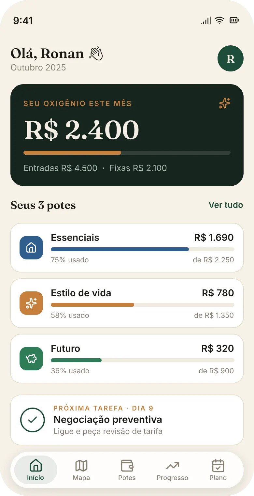

Esgotamento de energia
Anotar cada bala, cada corrida de aplicativo ou cada compra de mercado exige um esforço que a vida real não comporta. Quando a tarefa vira fardo, o cérebro sabota: você simplesmente para de anotar.
E-BOOK + APP · MÉTODO POTES
Três potes, 10 minutos por dia e um app que registra cada gasto em 10 segundos. O e-book completo sai com 1 ano do app Potes incluso.
Quero o e-book + 1 ano do appNada de assinatura no checkout: o app é grátis pelos próximos 12 meses.
por Ronan Alves de Morais · 24 páginas · Plano de Ação de 30 Dias
O PROBLEMA
Você já tentou. Baixou o aplicativo famoso, montou a planilha cheia de fórmulas, maratonou vídeos no YouTube. Durou duas ou três semanas. O problema nunca foi você.
Anotar cada bala, cada corrida de aplicativo ou cada compra de mercado exige um esforço que a vida real não comporta. Quando a tarefa vira fardo, o cérebro sabota: você simplesmente para de anotar.
A planilha fria expõe os seus erros. Ver o quanto foi para o lazer desperta julgamento pessoal. E o que a gente faz quando sente culpa? Evita. Você foge justamente nos dias em que mais precisaria olhar.
Uma lista infinita diz onde você gastou, mas não diz o que realmente importa. Ela trata um remédio de farmácia e um impulso no e-commerce com o mesmo peso visual — e você fica perdido na hora de cortar.
O MÉTODO
O Método Potes troca o controle exaustivo por três decisões simples — e um aplicativo que mantém o mapa à vista. Sem fórmulas, sem relatório interminável.
Qual é o tamanho real do meu campo de visão este mês?
Renda, contas fixas e variáveis em três colunas simples. O mapa sai em 10 minutos — você não precisa de precisão de centavos, precisa de direção.
Onde o meu dinheiro constrói valor e onde ele está escorrendo pelo ralo?
Cada real vai para um dos três potes: Essenciais, Estilo de vida e Futuro. E o filtro de 24 horas segura o impulso antes de virar fatura.
Como eu sei, de forma simples e visual, que estou saindo do lugar?
Termômetro de conquista, corrente de dias e uma revisão de 10 minutos no domingo. Progresso visível — sem neura e sem gráfico complexo.
O QUE VAI NA SUA MÃO
Não é só um PDF. É o método escrito, o plano dia a dia, os scripts prontos para copiar — e a ferramenta que faz tudo isso rodar sozinho.
24 páginas, do diagnóstico emocional ao plano fechado. Direto ao ponto, sem enrolação acadêmica.
Uma tarefa prática por dia, de 10 minutos. Do Dia 1 ao Dia 30, com o alvo de cada dia explicado.
O que dizer, palavra por palavra, para renegociar dívida, recusar convite fora do orçamento e pedir desconto.
Oito gastos invisíveis para revisar e cortar ainda nesta semana.
Três notas que substituem qualquer aplicativo complicado — Entradas, Saídas e Progresso.
R$ 9,90 por mês — R$ 118,80 no primeiro ano — sem custo para quem compra o e-book hoje.
DEPOIMENTOS
Histórias de leitores que trocaram o controle exaustivo por três potes e 10 minutos por dia.
4,9 de 5 · 312 leitores já aplicaram
Eu tinha três planilhas abandonadas. Com os três potes eu finalmente entendi para onde o dinheiro ia — sem anotar cada cafezinho.
Em uma semana achei R$ 380 de assinatura e delivery que eu nem sentia sair. Cortei metade sem perder qualidade de vida.
O que mudou pra mim foi a revisão de domingo. Dez minutos e eu sei exatamente qual é o próximo passo do mês.
A OFERTA DE LANÇAMENTO
Quem compra o e-book hoje leva 12 meses do app Potes sem mensalidade. São R$ 9,90 por mês que você não paga — e a primeira cobrança só venceria daqui a um ano.
R$ 118,80 → R$ 0 hoje
A primeira mensalidade só venceria em outubro de 2027. Até lá, o app inteiro é seu — os três potes, o mapa do mês, o plano de 30 dias e a revisão semanal.
E O APP VEM JUNTO

Entender o método é metade do caminho. A outra metade é vivê-lo todos os dias — e é isso que o app faz por você.
Renda, contas fixas e a divisão dos potes. O app monta o seu mês a partir daí.
Um toque, um pote. E a pergunta que muda o comportamento: “isso sai de qual pote?”.
As três colunas do planejamento sempre à mão — e o seu oxigênio, o número que devolve a sua margem de manobra.
Quatro perguntas mostram o que ajustar. Ajuste de rota, não de caráter.
O app não pede senha do banco e não julga os seus gastos. Quanto mais honesto você for na configuração, mais útil ele fica.
ANTES DE DECIDIR
Não. O método não muda com o tamanho da renda — muda o valor de cada pote. Ele funciona tanto com dois salários mínimos quanto com renda variável.
O registro leva 10 segundos e força a pergunta “isso sai de qual pote?”. A decisão acontece antes da compra, não depois — é por isso que não dá para abandonar.
Não. O app não pede senha do banco e não julga os seus gastos.
Em situação crítica, o Pote 3 é redirecionado para estancar as dívidas. Guardar R$ 10 no início vale pela musculatura do hábito, não pelo montante.
Não: são 12 meses grátis. Depois, R$ 9,90 por mês. Como você compra hoje, a primeira mensalidade só venceria em outubro de 2027.
Não. Você registra só o que importa — o método existe justamente porque anotar tudo nunca funcionou.
O SEU PRÓXIMO PASSO REAL
Você não precisa consertar toda a sua história financeira de uma só vez. Precisa dar o próximo passo certo — e deixar o app segurar o resto.